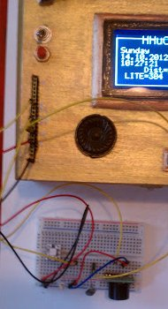

As Seen on Adafruit's Show and Tell!
The goal
I often see, of course buy, some new component: a different ping sensor, a new servo, that I wish to experiment with. When the package is open and I'm faced with doing something, I find that the cost of entry...
- Digging out an Arduino
- Hooking up a power supply
- Being tethered to a notebook for debugging output
...prevents me from getting around to it.
The Project
Time to change that
 The HHuCP pays homage to the Electronic kits and Microprocessor trainers of the 70s, most notably the Heathkit ET-3400 Microprocessor Trainer.
The HHuCP pays homage to the Electronic kits and Microprocessor trainers of the 70s, most notably the Heathkit ET-3400 Microprocessor Trainer.
It's a Teensy++ 2.0 (Arduinish) microcontroller and some of the most generally useful components, pre-assembled with a large number of pins broken out for experimentation with different components microcontroller and some of the most generally useful components, pre-packaged with a large number of pins broken out for experimentation with different components.
Included are:
- Teensy ++ 2.0
- IR LED
- RGB LED
- Graphic LCD Display
- 8 Ohm Speaker
- Reset Button
- One Toggle Pushbutton with an LED ring (lit when on)
- Two Momentary Pushbuttons with LED rings (lit when off)
- IR Sensor
- Ambient Light Sensor
- DS 1302 Clock and EPROM
- USB port for power, programming/debugging, or HID
- Exposed Power, DIO, AIO, i2c pins
Some random notes:
The pushbuttons can be configured to be lit when on/off/always/never - to keep my options open, I ran them to a mini breadboard so that I could reconfigure them in hardware.
Sugru is the best followup to cutting holes in a cigar box with a Dremel!
Use good/suitable wire. If one breaks off early on, bite the bullet and use different ones, you'll just have to go back and replace them later otherwise.
Experimenting and Prototyping

I add in external components as needed on a breadboard and run jumpers to the external bus breakout.
Software
My Demo app supports the built-in components and, along some of my own libraries used therein, is on Google code.